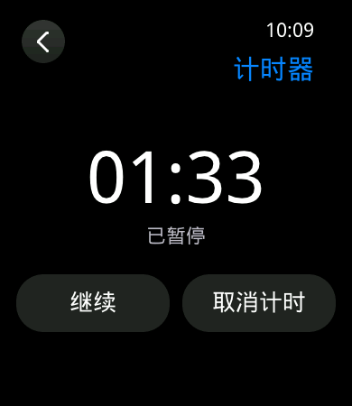
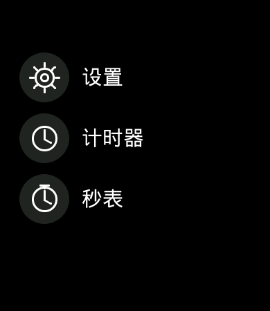
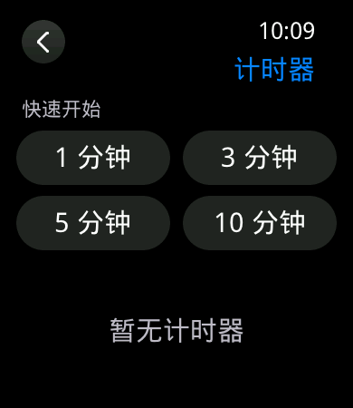

D11 计时器与秒表实施记录
1. 范围与边界
D11 实现 8 个并行计时器、1 个秒表和最多 100 条计次记录，打通固定容量核心、服务命令、版本化快照、应用入口和页面恢复。计时使用 64 位单调毫秒，不读取日历时间计算剩余值；RTC 校时不会改变运行或暂停中的计时器与秒表。
提醒页面、声音/振动互斥、16 个闹钟和 24 槽全局提醒队列属于 D12。D11 只保留计时器的 occurrence 与 alert_pending，证明到期只登记一次，不伪造完整提醒输出。重启连续性尚未启用持久化，因此冷启动后不承诺恢复活动计时。
2. 所有权与数据结构
| 模块 | 职责 | 约束 |
|---|---|---|
core/iw_chronograph | 纯 C 状态机；创建、推进、暂停、继续、取消、重启、秒表与计次。 | 8 个计时器和 100 圈全部静态分配；失败无副作用；ID、occurrence 和 revision 不回绕。 |
services/iw_service | 校验 32 B 命令、维护 48 B 结果账本、发布 TIMER/STOPWATCH 快照。 | 每轮先推进到期事件，再处理命令；页面退出不取消已受理命令。 |
services/iw_service_runtime | 单一服务线程每秒采样，命令到达时立即推进；提供只读诊断。 | 服务线程栈保持 4 KiB；硬件阻塞调用不放在模型锁内。 |
gui_core/platform | 应用列表、计时器列表/详情、秒表 View 与控制器。 | 页面只持快照和请求 token；业务状态由服务所有，重新进入从快照恢复。 |
3. 状态与并发语义
- 运行计时器的剩余值始终取
max(deadline_ms-now_ms, 0)，没有逐秒递减变量。 - 服务在处理 PAUSE/CANCEL 前先推进所有到期项；命令与截止时刻相同时，计时器先进入 EXPIRED，随后命令得到 STATE_CONFLICT。
- 暂停保存单调剩余值，继续时以新的单调时刻重建 deadline；日历和时区修改不参与计算。
- 到期只将一次 occurrence 标成 pending；重复推进不重复产生事件。RESTART 原子清除旧 pending 并分配新 occurrence。
- 秒表暂停时累计当前段；再次开始记录新的 segment_start。第 101 次计次返回 CAPACITY，已保存 100 圈及运行中的秒表均不改变。
4. 页面与资源
应用列表新增“计时器”和“秒表”真实入口。计时器列表提供 1、3、5、10 分钟快捷创建并列出活动实例；详情页按状态显示暂停、继续、取消或重新开始。秒表页显示十分之一秒、开始/暂停、计次/复位及最近 8 圈，完整 100 圈仍保存在服务快照中。
页面沿用 IW-VISUAL-2.0 的 390×450 安全区、Q0/Q1、正常/大字号和减弱动效。新增正式文案后，字体由 389 字符、65,752 B 更新为 406 字符、69,004 B，SHA-256 为 58fd17879dca9c8fb48af7bdff7896aecb8a8ef4671ed2cc01726803c554fb4d；仍低于 131,072 B 上限。
36 张同源静态帧及哈希覆盖应用入口、空/混合/满 8 个计时器、运行/暂停/结束详情、秒表运行/满 100 圈运行，以及 Q0、Q1、大字号和减弱动效。帧由生产 View 主机软件渲染，不作为实屏、单调时钟精度或硬件性能证据。




5. 验证结果
| 层级 | 覆盖 | 状态 |
|---|---|---|
| 主机核心 | T16 截止时刻与暂停/取消；RTC 无关；容量、饱和和失败无副作用；T17 后台到期及第 101 圈。 | 通过 |
| 主机 GUI | 新页面布局、字体、路由 ID 参数、1,000 轮生命周期、离页结果 ACK、退出后恢复。 | 通过 |
| GCC / Keil | 原源码 a928b330082e 与整改源码 639863c26549 分别干净构建、检查镜像内嵌身份、资源预算、布局、归档和 COM255 烧录 DryRun。 | 两轮、双工具链通过 |
| 开发板 | 原 GCC 镜像记录到期、离页运行和亮度；整改 GCC 镜像重新写入并验证满容量可见反馈、服务拒绝和反复进退。 | 整改镜像通过相关页面实机复验；原记录保持历史证据 |
原镜像构建与容量（整改前）
| 工具链 | main.bin | 6 MiB 槽占用 | SHA-256 |
|---|---|---|---|
| GCC | 1,923,608 B | 30.575% | 0ec7ba078331724d8b421ef6d2d4f3307fbb04998b8e2aa4cf071dfd84706ce3 |
| Keil | 1,848,392 B | 29.379% | ce70cf15c8e8142953a50f9217a6613b35439771fed756f8462e192af301012e |
两份归档的 git_head 均为 a928b330082e8a1fe5e292bf73d12dfb85bb76bc，嵌入标签分别为 a928b330082e / 00e6430805da / gcc 和 a928b330082e / 00e6430805da / keil；map 工具链标记与产物分别对应。字体文件 69,004 B、位图字体 51,335 B、链接图片 866,577 B，预算通过。身份 JSON 的“未刷入”是构建时快照，板测状态由下方独立记录给出。
实机与原始证据
GCC 的 Bootloader、main 和 FTab 按归档清单经 COM9 写入并校验；未访问 J-Link。COM10 原始数据 133,381 B，SHA-256 5c140182c677f4cf87ec33a844a1df612b112771c5abefeb1893d77e9de53ddb；时间线 SHA-256 e6c0080c694f79d77c431c11226c303b49a5d32e7ee9e1f40d73b2b260ecc36c。5,254 段接收偏移连续，说明采集程序保存的数据没有内部缺口，不证明物理链路绝无丢字节。
| 场景 | 本轮观察 |
|---|---|
| 触摸与实体键 | 操作者确认计时器创建、暂停、继续和 KEY1 返回正常；没有把串口命令当作实屏点击证据。 |
| 离页到期 | 3 秒计时器在表盘前台到期，连续读取均为 occurrence=1, alert=1；页面创建的 60 秒计时器到期登记 occurrence 2，重启后为 occurrence 3。此处只证明 pending 登记，提醒输出由 D12 实现。 |
| 秒表离页和容量 | 离开秒表页期间经过时间从 564 ms 增至 4,593 ms；重新进入保留状态。100 次 lap 成功，第 101 次返回 CAPACITY，原有 100 圈及 RUNNING 状态保留。暂停后 3 秒内两次读取均为 118,011 ms；复位后为 IDLE、0 ms、0 圈。 |
| 往返与资源 | 串口自动执行 10 轮计时器列表／秒表页开关。同一应用列表前台状态的 11 份主堆样本均为 80,020 B，字体引用为 7；字形池在缓存回收中由 36,636 B 降至 35,508 B，未见逐轮增长。该状态有后台对象，不能与冷启动基线直接比较。 |
| 显示与输入 | 20% 与 80% 目标／实际亮度和 ACK 对应；最后为 80%。本窗口触摸溢出 0，显示恢复 0、fault_pending 0，未见 HardFault、断言或 LCD timeout；不据此关闭 #8、#10。 |
原始目录 logs/board-validation-20260918-d11/ 仅本机可用，未入库：含 serial-raw.bin、timeline.jsonl、commands.txt、两份构建身份、两份 DryRun、烧录进度与 board-validation.json。可运行 py -3.14 tools/d11_verify.py logs/board-validation-20260918-d11 复核原始数据，脚本在仓库内。烧录进度文件只保留进度百分比，不能单独作为写后校验的完整输出；本轮完成状态来自执行流程与随后的启动和功能窗口。主机测试、构建身份、开发板诊断和操作者实屏确认分别记录，互不替代。
该阶段主机核心脚本和 46 项 Python 回归通过（其中一项可选环境测试跳过）；46 份 HTML 的本地链接、锚点和 90 项校验和通过。T16 的截止同刻竞争及 RTC 校时独立性由主机状态机测试覆盖；该轮没有在硬件上精确注入同毫秒边界，也没有实机断电保持、真实内存耗尽或完整提醒输出验收。此处为早期镜像记录，最终审批见第 8 节。
长文和输入性能继续由 Issue #8 跟踪；半黑半白显示异常继续由 Issue #10 跟踪。D11 不以二者已关闭作为前提，也不把未复现写成已修复。
6. 架构复核增量整改
架构复核发现三项局部缺陷，原验收结论暂缓。计时器 RESTART 现在只接受 EXPIRED，RUNNING／PAUSED 在截止前使用正确 revision 请求也返回 CONFLICT，状态、全局 revision、occurrence 和输出保持不变；截止同刻仍先推进到期，再以新 revision 请求重新开始。核心单测覆盖这些边界。
满 8 个计时器时，快捷创建按钮禁用，“计时器已满”显示在按钮下方、第一条列表上方；满 100 圈且仍运行时，“计次”禁用，提示取代按钮下方的“计次记录”。暂停后的“复位”仍可用。控制器对服务返回的 CAPACITY 也选择相应提示；绕过界面直接提交时，服务仍拒绝。主机测试断言提示位于 390×450 可见区、禁用填充和命中测试，36 张同源帧包含 Q0／Q1、字号／动效以及两类满容量场景。
tools/d11_verify.py 现在要求全窗口的每个触摸溢出采样都为 0，缺失采样也失败；故障检查包括实际串口格式 Assertion failed 和 draw_core timeout。独立反例测试分别注入早期／末尾非零计数、断言与绘制超时，均被拒绝；旧原始记录重新验证通过，四个溢出计数采样都为 0。原始日志未因脚本漏洞被判定为实际发生故障。
整改源码 639863c26549 的主机核心脚本、正式字体确定性校验、完整 View 故障注入和 1,000 轮生命周期矩阵通过；字体字符集与二进制仍为 406 字／69,004 B，清单仅更新输入源码哈希。GUI 矩阵包含 37 个构造、47 个绘制和三个各 5 个真实排版分配失败点，36 张重新生成的画面哈希与清单一致。
| 整改镜像 | main.bin | SHA-256 | 结果 |
|---|---|---|---|
| GCC | 1,923,784 B | caddbbdb96577a497583c2a8dbaf604a458be9dc80a9f51126eec9983c1a1bb7 | 身份、预算、布局、COM255 DryRun 通过 |
| Keil | 1,848,624 B | b868b5c9b3e6e3baa087aa1bab25d2718ce17b92cfd3d1df1eecedbfa58a5420 | 身份、预算、布局、COM255 DryRun 通过 |
两套新镜像内嵌身份均指向 639863c265494a3ae6c2fb6b850c460e2619da58，输入摘要 cc3205f38c37，工具链后缀各自独立。归档复核前发现本机 SDK 工作树处于干净原版；按固定哈希的受控补丁恢复并通过 verify-derived 后，GCC／Keil 的 build_identity verify 均通过。此过程仅恢复验证环境，没有修改镜像或重刷。整改 GCC 的 Bootloader、main 和 FTab 经 COM9 依清单写入并校验；完整烧录会话保存在下述本地原始目录，不以旧镜像板测替代。
整改镜像实机复验
COM10 新原始窗口为 125,264 B，SHA-256 17281fe1d199c9ff8eb466c3425130ce98ce73a5485d4d0d1a8b3f4d68a226cc；时间线 SHA-256 7254bcf25dd4674033db64f0a6a48dc7d7b7f605def5ad5fa095b80349c0d803。4,884 段接收偏移连续，只证明采集程序保存的窗口内部无缺口。启动识别到 CO5300 与 FT6146；既有 flash1 FAL 报错仍留待 D15。
| 检查项 | 新镜像观察 |
|---|---|
| 计时器上限 | 8 次创建成功，第 9 次返回 CAPACITY；快照仍为 8 个、revision 9。操作者确认“计时器已满”在预设按钮附近完整可见，新增按钮禁用。 |
| 秒表上限 | 100 次计次成功，第 101 次返回 CAPACITY；快照仍为 RUNNING、100 圈、revision 102。操作者确认“计次已满”可见且计次按钮变灰，暂停后开始和复位可用；随后实机快照为 IDLE、0 ms、0 圈。 |
| 反复进退与内存 | 回到同一应用列表状态后，追加 13 轮计时器／秒表页面往返。最后 10 次主堆均为 51,352 B，字体引用均为 2；字形池在 12,932～13,660 B 间波动，未观察到逐轮增长。冷启动主堆为 46,040 B、字形池 4,932 B，存在缓存驻留，不宣称恢复到冷启动数值。 |
| 输入与故障 | 四次触摸溢出采样均为 0；服务累计提交、完成与 ACK 均为 113，队列归零。全窗口未见 Assertion failed、draw_core timeout、HardFault 或 LCD timeout。该窗口不代表 #8、#10 已解决。 |
该轮原始目录 logs/board-validation-20260919-d11-fix/ 仅本机可用，未入库：含完整 COM9 烧录 transcript、COM10 原始字节、时间线、命令、分析脚本及 board-validation.json。可运行 py -3.14 logs/board-validation-20260919-d11-fix/analyze.py 重算哈希、检查接收连续性、容量响应、内存样本和全窗口故障。实机未精确注入 RUNNING／PAUSED 的 RESTART 竞争；该项由主机状态机测试覆盖。此时尚未处理后续容量恢复问题，最终审批见第 8 节。
7. 容量释放后按钮恢复与 SDK 基线隔离
架构复核在整改镜像上复现“服务拒绝新增、取消一个、列表仍有旧的满额提示且四个新增按钮保持禁用”。根因是 View 将旧的 TIMERS_FULL 消息与最新计时器数量作“或”判断，页面恢复后旧消息覆盖了容量已释放的快照。本次修复让按钮与提示只取当前有效快照的数量；控制器收到有效且不足上限的快照时清除旧满额消息。秒表计次使用同一规则，避免 100 圈提示在重置后残留。服务层的容量拒绝保持不变。
主机回归加入真实控制器／服务／View 流程：列表为 7 个时，外部占用最后一个名额，页面新增被拒；取消一项返回后，计数为 7、提示清除、四个按钮恢复可点，再次新增成功。View 测试同时覆盖“旧满额消息＋当前未满”的计时器和秒表状态。干净原版 SDK 单独固定于 C:\OpenSiFli\_workspaces\iwatch-sdk-base-d11，提交 421126d9f476ed8e2a6f0b0ca28a9f241c182e65，与受控补丁 SDK 分离；测试包装脚本将已校验的 Base/Patched 路径传给嵌套 Python 检查。完整核心回归 46 项通过、1 项可选环境检查跳过，GUI 回归 38 项通过，故障注入和生命周期矩阵通过。未重置或修改本机另一个非干净 SDK 目录。
本次固件源码提交 e6fc348b973d6ada69417d1c854186911a470bad。GCC 和 Keil 均从该提交重构建，归档 git_head 与内嵌标签一致，资源预算与 COM255 DryRun 通过。36 张 D11 静态帧重新生成后与清单哈希一致，说明本次状态修复没有改变既有画面基线。
| 工具链 | main.bin | SHA-256 | 身份 |
|---|---|---|---|
| GCC | 1,923,832 B，6 MiB 槽 30.578% | f2e55d6ba0a9276098038c6e8acd4d9c4073b4e8bdade93f23f62b92f29881f9 | e6fc348b973d / d11acf263c18 / gcc |
| Keil | 1,848,648 B，6 MiB 槽 29.383% | efe88a103bf8a7c13d9eaae82ca0ee182255d28fd2c64958e195bd17c85bb03c | e6fc348b973d / d11acf263c18 / keil |
GCC 三件套经 COM9 写入并校验。COM10 新原始窗口为 37,060 B，SHA-256 a8497327c968974bf57dd6147e85f08ad498ce763cf4c9925891f6363fc29cfb；时间线 SHA-256 e3e6479a9668cf4b41716a32630ce171ae8a933bb8deb54081a0b0d98694edf9，1,266 段接收偏移连续。原始目录 logs/board-validation-20260919-d11-recovery/ 仅本机可用，未入库，含完整烧录输出、原始字节、时间线、命令与可复算脚本。启动识别 CO5300 与 FT6146；既有 flash1 FAL 报错继续归 D15。
串口先创建 8 个计时器，第 9 次返回 CAPACITY 且快照保持 8 个；操作者实屏确认满额按钮禁用、详情页取消后四个新增按钮恢复、再次新增成功。随后快照为 8 个，出现新 ID 9。自动往返 5 次后，同一应用列表前台状态的 6 份主堆样本为 50,552～50,588 B、字形池为 11,240～11,340 B，字体引用均为 2；没有观察到逐轮增长。三个触摸溢出采样均为 0，服务 11 次提交、完成、ACK 对齐；全窗口未见 HardFault、断言或 LCD timeout。新建的 60 秒计时器后来正常到期，不将 pending 登记冒称 D12 提醒输出已实现。
主机测试精确覆盖容量拒绝与页面恢复的竞争；实机覆盖满额、取消、再次新增和页面往返，没有人为注入同一个快照竞态。主机、构建和实机结论分开使用；#8、#10 与 D12 均不随 D11 收口。
8. 架构审批
架构师按提交 d2a0691、固件源码 e6fc348 复核后批准 D11 既定范围收口，允许进入 D12。独立复现程序、正式主机回归、现有 GCC／Keil 产物身份和实机封存记录均通过；本次审批复核未重新编译固件、连接开发板或烧录。缺少 FontTools 时，字体重复生成的 1 项可选测试跳过；容量拒绝与恢复的精确竞态由主机测试证明，不记为实机故障注入通过。
Issue #13 按 completed 关闭。长文与输入性能 #8、半黑半白显示异常 #10，以及后续持久化分别跟踪。D12 才实现闹钟、24 槽提醒账本、互斥输出和全局提醒页；D11 不把这些后续功能计入完成范围。